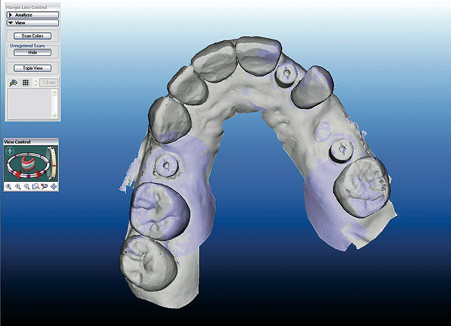

Zirconia all ceramic crowns have the highest strength and fracture toughness in dentistry, the most aesthetic appearance and a better fit than all other ceramic crowns. They are chemically stable and have a very high level of biocompatibility. They also are proved to make crowns aesthetically more pleasing and cost efficient as they eliminated the ever increasing cost of gold, the cost efficiency of PFM’s always posed an issue.
Now-a-days, science of dentistry has improved and technology became more advanced Nobel biocare produces a scanning machine, Procera Forte allowing a product of high quality using computer technology, as opposed to conventional methods such as waxing, investing ,casting and grinding/trimmimg the framework so the final products are more efficient and less time consuming. Consistent quality Process is not neccessary to rely on lab technician 's skill.
Maximum aesthetics and strength
Procera is a well-proven, clinically accepted, metal-free, esthetic alternative to PFM crowns. It is a high strength all-ceramic crown combining translucent, metal-free esthetics with increased flexural strength, biocompatibility and precision fit for both anterior and posterior applications.
Since 1989, Procera has enabled dental professionals to confidently restore teeth with natural-appearing, metal free restorations, even in heavy load-bearing applications. Procera combines CAD/CAM technology along with an aluminous oxide core to produce a restoration offering superior strength and great esthetics.
Advantages
- Strength ideal for any position in the mouth, using traditional prep techniques to cement or bond in place.
- Natural Beauty
- Optimal Fit
- 5-Year Warranty On Coping
- Shaded Core
- exhibit low wear against opposing natural dentition
- extreme biocompatibility with surrounding soft tissues